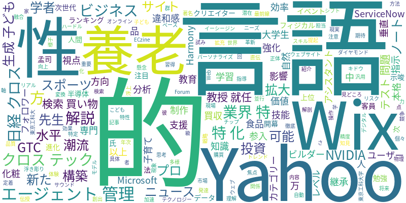

☁️ 今日のトレンドワード

📰 今日のピックアップニュース (10件)
スポーツの「学び方」とAI活用
スポーツにおける技能継承の難しさと、AIを活用した「学び方」の効率化について解説。AIが個々の学習ペースや特性に合わせた指導を提供し、より効果的なスキルの習得を支援する可能性を探る。
生成AIと子どもの教育、専門家の懸念
子育て中の言語学者が、生成AIを子どもに利用させることへの違和感を言語学的な視点から分析。AIが子どもの言語発達や思考力に与える影響について、潜在的なリスクと注意点を提起している。
AIエージェント管理の新潮流
MicrosoftのAIエージェント管理への本格参入と、ServiceNowの買収による強化が、AIエージェント管理市場に新たな潮流を生み出している。企業はAIエージェントの活用と管理をどのように進めるべきか、その重要性が増している。
Yahoo!検索、買い物AIを拡充
Yahoo!検索の「お買い物AIアシスタント」が、食品や化粧品など200以上のカテゴリーに対応を拡大。ユーザーの多様なニーズに応え、よりパーソナライズされた購買体験を提供する。AIによる検索精度の向上が期待される。
AIでプロ級サイト構築 Wix新発表
Wixが発表した新AIビルダー「Wix Harmony」は、自然言語での指示のみでプロレベルのウェブサイトを構築可能にする。これにより、専門知識がないユーザーでも高品質なサイト制作が可能になり、ウェブ制作のハードルが大きく下がる。
AIビジネス、水平から垂直へ
AIビジネスの競争軸が、汎用的な「水平AI」から特定の業界に特化した「業界特化AI」へとシフトしている。この記事では、業界特化AIで勝つための戦略と、AIビジネスにおける価値創出の方向性を解説している。
AIでノートをテスト問題に
フォロワー80万人を持つ大学生クリエイターが、AIを活用した革新的な勉強法を伝授。ノートの内容をAIが自動でテスト問題に変換する技術により、効率的な学習と知識の定着を支援する具体的な方法を紹介している。
AIの次に来る技術は？
投資データから、AIの次に注目されるべき技術トレンドを分析・解説。ランキング上位に浮上した技術群を掘り下げ、将来のテクノロジー投資の方向性を示唆する。AIの進化と並行して、新たな技術開発が加速している様子が伺える。
AI養老先生、教授に就任
著名な解剖学者の養老孟司氏と、彼をモデルにした「AI養老先生」が東京工科大学の客員教授に就任。AIと人間の知見を融合させる試みであり、教育現場でのAI活用や、人間とAIの関係性について新たな視点を提供する。
NVIDIA GTC、AIの進化に注目
NVIDIAの年次イベント「GTC」が開幕。本イベントでは、物理現象を理解・操作する「フィジカルAI」や、次世代半導体技術に焦点が当てられる。AIチップの最前線と、AIが現実世界へ与える影響の拡大が示唆される。
今日のAI・テック業界は、AIの応用範囲の拡大と、その基盤となる技術開発の両面で目覚ましい動きを見せています。スポーツにおける技能継承、子どもの教育、そしてウェブサイト制作といった、これまで人間中心と考えられてきた領域でもAIの活用が模索されています。特に、Yahoo!検索のお買い物AIアシスタントやWixのAIビルダーは、AIがより身近で実用的なツールとして普及していく兆しを示しています。一方で、MicrosoftやServiceNowのような大手企業は、AIエージェント管理という、AIの運用を効率化・高度化する分野に本格参入し、新たな市場を切り開いています。また、NVIDIAのGTCでは、AIが物理世界に介入する「フィジカルAI」や次世代半導体といった、AIの進化を支える基盤技術に焦点が当てられています。さらに、AIの次に来る技術への投資も活発化しており、テクノロジー業界全体が急速な変化の渦中にあることが伺えます。AIは単なるツールから、社会の様々な側面を再定義する力を持つ存在へと進化を続けていると言えるでしょう。